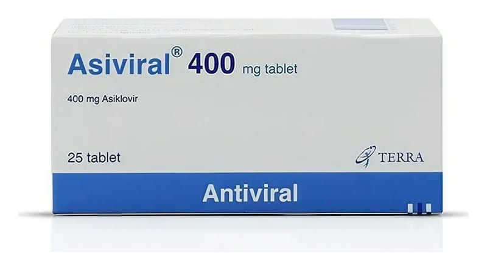

Asiviral 400 mg Tablet, 25 Adet

Ne için kullanılır
KT · Bölüm 1ASİVİRAL®, Herpes simplex virüs (HSV) tip 1 ve 2 virüslere karşı etkili antiviral bir ilaçtır. ASİVİRAL etken madde olarak asiklovir içerir. 25 ve 70 tabletlik blisterlerde sunulmaktadır. ASİVİRAL®, deri enfeksiyonlarında (uçuk), suçiçeğinde, zonada (Sinir iltihabına bağlı ağrılı bir deri hastalığı), AIDS ve kemik iliği naklini takiben ciddi bağışıklık sistemi yetersizliği olan hastaların tedavisinde kullanılır.